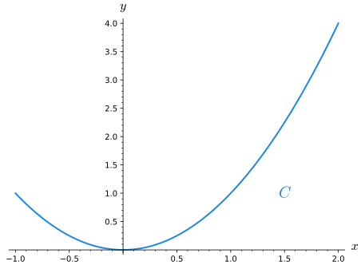
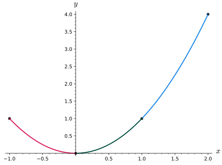

How can you measure the accumulation of a scalar function over a curve in space?
How can you efficiently calculate the scalar line integral over a curve in space?
In Section13.2, the idea of a line integral was introduced by looking at the work done by a vector field when traveling along \(C\text{,}\) a path in space. In particular, the line integral measured the accumulated amount of the vector field that is along the path \(C\) (in the direction of travel.) Definition13.2.9 shows how to use a Riemann sum to measure the accumulation of the vector field in the direction of travel along the given curve. Additionally, Theorem13.3.6 shows how the line integral \(\int_C \vF\cdot d\vr \) can be efficently calculated in terms of the vector field and the derivative of any paramaterization of \(C\text{.}\) Philosophically, the Riemann sum in Definition13.2.9 is adding up the scalar function given by the dot product of the vector field and the unit vector in the direction of travel (along the curve).
We will devote the rest of this section to answering these questions about generalizing the ideas of line integrals as fully as possible.
How can we measure the accumulation of a scalar valued function along a curve in space?
What would that accumulation measure physically?
What is the most efficent way to calculate this accumulation?
Preview Activity13.5.1.
In order to pay for tutition, you take a job driving a mining machine that collects a very valuable mineral called copium. Copium is only produced on the surface and is mined by scooping up the soil at the front of your machine, so the amount of copium ore collected depends on the density of the ore and the distance driven by the mining machine. The plot of land you are mining has been surveyed for the density of copium ore and is presented in the contour plot below.
Figure13.5.1.A plot of land with density of copium deposits
(a)
Estimate the amount of copium that would be mined from driving along the left side of plot. You should write a few sentences about how you got your estimate based on the copium density and length of the path. (Did you use more than one piece?)
(b)
Estimate the amount of copium that would be mined by driving along the entire outer edge of the plot. You should write a few sentences about how you got your estimate based on the copium density and length of the paths.
(c)
Estimate the amount of copium that would be mined from the scraping the curved path shown below. You should use at least 3 segments in your estimate. You should write a few sentences about how you got your estimate based on the copium density and length of the paths.
Figure13.5.2.A plot of land with copium Density and a path plotted in blue
(d)
Estimate the amount of copium that would be mined from the scraping the curved path shown below. You should use at least 3 segments in your estimate. You should also explain how and why your answer to this question is different or similar to the previous task.
Figure13.5.3.A plot of land with copium density and a path plotted in blue
Subsection13.5.1Defining line integrals of scalar functions
In Preview Activity13.5.1, you approximated the distance traveled for various paths and multiplied by the density of the copium on each piece of the path. In contrast to the line integral of a vector field, the calculations of the ore mined does not depend on what direction the path was traveled. We will now use these same ideas to give precise meaning to the measurement of the acculumation of a scalar functions output over a path in space.
Let \(f\) be a contiunuous function of \(x\text{,}\)\(y\text{,}\) and \(z\) for some open set around \(C\text{,}\) a curve from a point \(P\) to a point \(Q\text{.}\) We will begin to approximate the acculumlation of the output of \(f\) over \(C\) by breaking \(C\) into pieces with boundary points \(P=\vr_0, \vr_1, \dots, \vr_n-1, \vr_n=Q\text{.}\) The curve \(C_i\) is the part of \(C\) that goes from \(\vr_{i-1}\) to \(\vr_i\) and \(\Delta \vr_i\) is the displacement vector from \(\vr_{i-1}\) to \(\vr_i\)
Figure13.5.4.A curve in space with segments given by \(\mathbf{r}_i\)
We can approximate the accumulation of \(f\) over \(C\) with the following sum
where \(f(r_i^{*})\) is the output of \(f\) for some \(\vr_i^{*} \in C_i\text{.}\) As this sum uses more pieces and all of the lengths of the pieces goes to zero (i.e. \(|{\Delta \vr_i}| \rightarrow 0\)), we would expect that the sum will approach the actual acculumation of \(f\) over \(C\text{.}\) Notice that it wont matter how we select the point \(\vr_i^*\) that is used in each piece to evaluate the output of \(f\) since evaluating the limit as the length of \(C_i\) gets smaller will ensure that the output value choosen will be within a shrinking error from the average value on each piece. Evaluating the limit of the sum above as the size of all of the pieces goes to zero will transform our Riemann sum into an integral that will measure the accumulation of the output of \(f\) over \(C\text{.}\)
Definition13.5.5.The Line Integral of a Scalar Function.
Let \(C\) be a curve from a point \(P\) to a point \(Q\) in space. Let \(f\) be a contiunuous function of \(x\text{,}\)\(y\text{,}\) and \(z\) for some open set around \(C\text{.}\) The line integral of \(f\) over \(C\) is defined as
\begin{equation*}
\int_C f ds =\lim_{n\rightarrow \infty} \sum_{i=1}^{n} f(\vr_i^{*}) |{\vr_{i}-\vr_{i-1}}|
\end{equation*}
where \(\vr_i\) are points such that \(P=\vr_0, \vr_1, \dots, \vr_n-1, \vr_n=Q\) and as \(n\rightarrow \infty\) the distance between \(\vr_{i-1}\) and \(\vr_i\) goes to zero.
The integral
\begin{equation*}
\int_C f \, ds
\end{equation*}
is called the scalar line integral of \(f\) over the curve \(C\).
The notation for a scalar line integral (\(\int_C f \, ds \)) may not immediately make sense. As with the other types of integration we have done (single variable integration, double integrals, line integrals of vector fields, etc.), the subscript of the integral symbol denotes the region of integration. In the case of a scalar line integral, the region of integration is a collection of points given by a curve in space. The function we are integrating is \(f\text{,}\) a scalar-valued functiton of multiple variables. The differential \(ds\) may seem unusual to you. If you remember from Section10.3, \(s\) is the arc length of a curve in space. So the differential \(ds\) in the scalar line integral notation means that we are adding up the output of \(f\) over steps in arc length. This should make sense in terms of how we set up our Riemann sums. We did not set up the pieces of our curve as steps in \(x\text{,}\)\(y\text{,}\) or \(z\text{,}\) but rather as steps in arc length (estimated by \(|{\vr_{i+1}-\vr_{i}}|\)). This may feel similar to situations such as double integrals, where we generically used \(dA\) for the differential, but the different contexts called for different values of \(dA\text{.}\) For instance, in polar coordinates, we use \(dA = r\, dr\, d\theta\)
Example13.5.6.
Before getting into the details of computing line integrals of scalar functions, we will first make arguments about when the line integral of a scalar function is positive, negative, or zero. For all of this example, we will use the curve \(C\) given by \(y=x^2\) for \(-1\leq x \leq 2\text{.}\) We also will define the following three scalar-valued functions on \(\R^2\text{.}\)
\(\displaystyle f(x,y)=x\)
\(\displaystyle g(x,y)=-y\)
\(\displaystyle h(x,y)=y-x^2\)

Figure13.5.7.The curve \(C\) used in the line integral for Example13.5.6
(a)
For our first case, we will consider the line integral
\begin{equation*}
\int_C f \, ds \text{.}
\end{equation*}
Remember that the line integral of \(f\) over \(C\) will measure the accumulation of the output of \(f\) over the points on the curve \(C\text{.}\)Figure13.5.8 shows that the blue branch of the curve \(C\) (for \(0\leq x\leq 2\)) will yield positive output values for \(f\text{,}\) while the magenta part, which has \(-1\leq x\leq 0\text{,}\) will produce negative output values for \(f\text{.}\) Intuitively, there is more of the curve with positive \(f\) outputs than negative \(f\) outputs, so we would expect \(\int_C f \, ds\) to be positive. However, the magnitude of the \(f\)-values produced must also be accounted for.
Figure13.5.8.The curve \(C\) split into regions with positive (blue) and negative (magenta) outputs of \(f\)
If we break our curve \(C\) into three pieces by dividing at \(x=0\) and \(x=1\) as shown in Figure13.5.9, we can make a rigourous argument about why the result of \(\int_C f \, ds\) will be positive. We will call the magenta, green, and blue sections of Figure13.5.9\(C_1\text{,}\)\(C_2\text{,}\) and \(C_3\text{,}\) respectively. Using the notation of Properties of Line Integrals, we have \(C = C_1+C_2+C_3\text{.}\) No matter how we break up the curve \(C_1\) to set up a Riemann sum used in Definition13.5.5 we can do the symmetric version on curve \(C_2\text{.}\) The only difference between the Riemann sums and thier associated line integrals for \(C_1\) and \(C_2\) will be the sign on the output of \(f\text{.}\) This means that
\begin{equation*}
\int_{C_1} f \, ds = -\int_{C_2} f \, ds
\end{equation*}
and thus
\begin{align*}
\int_C f \, ds \amp= \int_{C_1} f \, ds + \int_{C_2} f \, ds +\int_{C_3} f \, ds \\
\amp =-\int_{C_2} f \, ds + \int_{C_2} f \, ds +\int_{C_3} f \, ds\\
\amp = \int_{C_3} f \, ds\text{.}
\end{align*}

Figure13.5.9.The curve \(C\) split into three regions with positive (blue and green) and negative (magenta) outputs of \(f\)
The argument for why \(\int_{C_1} f \, ds = -\int_{C_2} f \, ds\) requires that both the points on the curves \(C_1\) and \(C_2\) and the output of \(f\) on those parts is symmetric. In Activity13.5.3 you will see examples where having only one part of this symmetry is not sufficent to make this type of argument.
We have shown that \(\int_C f \, ds = \int_{C_3} f \, ds \) and want to demonstrate why \(\int_{C_3} f \, ds \) will be positive. Because the output of \(f\) is positive for all of the points on the curve \(C_3\text{,}\) all elements of the associated Riemann sum in Definition13.5.5 will be positive (the length of the displacement vectors and corresponding arc lengths are always positive). Thus \(\int_C f \, ds = \int_{C_3} f \, ds \gt 0\text{.}\)
(b)
We now want to consider whether \(\int_C g \, ds \) will be positive, negative, or zero. This is a simpler argument than in the previous case because the output of \(g\) will be negative for all points in \(C\) (execept for the origin). Each term in the Riemann sum used to define the scalar line integral will be the product of a negative value (\(g(\vr_i^{*})\)) and a positive value (\(|{\vr_{i}-\vr_{i-1}}|\)). Therefore the Riemann sums will be negative and the limit as you take more terms in this sum will also be negative. Thus, \(\int_C g \, ds \lt 0\text{.}\)
(c)
Finally, we want to make an argument whether \(\int_C h \, ds\) will be positive, negative, or zero. While we cannot lean on the intuitive nature of the where coordinates are positive or negative, we can make a very precise argument about the output of \(h\) for the points on \(C\text{.}\) While \(g(x,y)=y-x^2\) will have a range that includes all real numbers, the output of \(g\) is always zero for the points on our curve \(C\) because for points on \(C\text{,}\) the \(y\)-coordinate is equal to the \(x\)-coordinate squared. This means that no matter how we break up our segments for the Riemann sum, the \(h(\vr_i^{*})\) terms will always be zero. No matter how many terms are used the Reimann sum will be zero, and the limit of the Riemann sums will also be zero. Thus, \(\int_C h \, ds=0\text{.}\)
Before delving into the exact computation of line integrals of scalar-valued functions, here is an activity that allows you to practice arguments similar to Example13.5.6.
Activity13.5.2.
In this activity, we will be making sense of scalar line integrals by examining a few common functions and justifying whether the scalar line integrals given are positive, negative, or zero. Let the functions \(f_1\text{,}\)\(f_2\text{,}\)\(f_3\text{,}\) and \(f_4\) be defined as
\(\displaystyle f_1(x,y,z)=y\)
\(\displaystyle f_2(x,y,z)=z\)
\(\displaystyle f_3(x,y,z)=x^2\)
\(\displaystyle f_4(x,y,z)=x-y\)
(a)
For each of the paths given below, sketch (in either 2D or 3D) the curve and label at least three points on the curve including the end points (if they exist).
\(C_1\) is the part of the unit circle in the \(xy\)-plane centered at the origin that is above the line \(y=-x\text{.}\)
\(C_2\) is the part of the curve at the intersection of the cylinder given by \(x^2+y^2=1\) and the plane \(z=x\) such that \(y \geq -x\text{;}\) You may want to consider the circle that is the intersection of \(x^2+y^2=1\) and \(z=x\text{,}\) then think about which half of this circle satisfies the inequality \(y \geq -x\)
\(C_3\) is the part of the helix given by \(\vr(t)=\langle \cos(t),\sin(t),\frac{t}{2 \pi}\rangle\) with \(t \in [0,\pi]\)
(b)
For each of the functions \(f_1\text{,}\)\(f_2\text{,}\) and \(f_3\) defined above, state whether \(\int_{C_1} f_i \, ds \) is positive, negative, or zero. Be sure to justify your answer in terms of the function being integrated and the particulars of the curve of integration.
(c)
For each of the functions \(f_1\text{,}\)\(f_2\text{,}\) and \(f_3\text{,}\) defined above, state whether \(\int_{C_2} f_i \, ds \) is positive, negative, or zero. Be sure to justify your answer in terms of the function being integrated and the particulars of the curve of integration.
(d)
For each of the functions \(f_1\text{,}\)\(f_2\text{,}\) and \(f_3\text{,}\) defined above, state whether \(\int_{C_3} f_i \, ds \) is positive, negative, or zero. Be sure to justify your answer in terms of the function being integrated and the particulars of the curve of integration.
(e)
For the function \(f_4\text{,}\) defined above, state each of the following integrals is positive, negative, or zero. Be sure to justify your answer in terms of the function being integrated and the particulars of the curve of integration. You should consider which parts of the curve being integrated will have positive/negative/zero output for the function \(f_4\text{.}\)
Subsection13.5.2Using Parameterizations to Calculate Scalar Line Integrals
Definition13.5.5 defined \(\int_C f \, ds\) in terms of a limit of a Riemann sum which is often useful for understanding what is being measured and not very useful when it comes to efficiently calculating the value of a given integral. A scalar line integral is presented algebraically in terms of three variables because the curve is given in terms of points in three coordinates and the function to be integrated is dependent on those same coordinate values. Geometrically, the scalar line integral is a one dimensional problem because we only have one dimension to travel; namely, we can travel along the curve in steps of arc length. Remember that a parameterization of a curve in space is a description of how to travel through the points (given as three coordinates) of the curve in terms of a parameter (usually given as \(t\text{.}\)) Parameterizations are very useful converting the three-variable algebra of a scalar line integral problem into a one dimensional integral. Once we have done that, we can use all of the tools of single-variable calculus to evaluate the scalar line integral.
Lets look at applying a parameterization for \(C\) given by a vector-valued function of one variable \(\vr(t)=\langle f(t), g(t), h(t)\rangle\) for \(t\) in some interval \([a,b]\) to Definition13.5.5. Instead of thinking in terms of pieces of the curve \(C\text{,}\) the parameterization allows us to break the interval \([a,b]\) into pieces \(a=t_0, t_1, \dots ,t_n=b\) where \(t_i=a+i(\Delta{t})\) and \(\Delta{t}=\frac{b-a}{n}\text{.}\) While these pieces will be equally spaced in terms of the parameter \(t\text{,}\) the corresponding points on the curve \(C\) given by \(r(t_i)\) may not be equally spaced.
Figure13.5.10.The curve \(C\) split into segments defined by equally spaced parameter values
To simplify the notation of our function evaluation, we will use the following:
where \(t_{i-1}\leq t_i^{*}\leq t_i \text{.}\) Remember that the parameterization will allow us to write all parts of the scalar line integral as a function of \(t\text{,}\) so we will simplify \(|\Delta \vr_i|\) as
This Riemann sum correponds to the definite integral of a scalar function of \(t\text{,}\) specifically \(f(t) v(t)\) where \(v(t)=|\vr'(t)|\text{.}\) We may think of \(v(t)\) is the speed of the parameterization \(\vr\text{.}\)
Theorem13.5.11.Calculating Scalar Line Integrals with Parameterizations.
Let \(C\) be a curve in space parameterized by \(r(t)\) for \(a\leq t\leq b\text{.}\) If \(f(x,y,z)\) is a multivariable function that is continuous for a region around \(C\text{,}\) then
With Theorem13.5.11 established, we now consider a couple of examples that allow us to find the exact value of line integrals of scalar functions considered in Activity13.5.2.
Example13.5.12.
Let us return to some of the problems from Activity13.5.2. Specifically, let \(C_1\) be part of the unit circle on the \(xy\)-plane that is centered at the origin and is above the line given by \(y=-x\text{.}\) We will also consider \(f_1(x,y,z)=y\text{.}\) We can parameterize \(C_1\) by \(\vr(t)=\langle \cos(t), \sin(t), 0 \rangle\) with \(-\frac{\pi}{4} \leq t\leq \frac{3\pi}{4}\text{.}\) Note here that \(|{\vr'(t)}| =|{\langle -\sin(t),\cos(t),0\rangle}|=1\text{.}\) We can rewrite the value of \(f_1\) along \(C_1\) using the parameterization as \(f_1(x(t),y(t),z(t))=f_1(\cos(t),\sin(t),0)=\sin(t)\text{.}\) Applying Theorem13.5.11, we have
This result should make sense from your earlier work in part13.5.2.b. Specifically, we can break the line integral of \(f_1\) along \(C_1\) into three parts according to the plot shown in Figure13.5.13.
Figure13.5.13.A subdivided plot of \(C_1\)
The scalar line integal on the blue and the magenta paths will cancel each other out exactly since the paths are symmetric about \(x\)-axis and the output of \(f_1\) will be opposite in sign on the blue and magenta portions. This means that \(\int_{C_1} f_1 \, ds\) will be the same as the line integral of \(f_1(x,y,z)=y\) on the green path. Since the output of \(f_1\) is positive on the green path, our result for the scalar line integral should be positive.
When working through Activity13.5.2, you may have found the line integrals involving \(f_3(x,y,z)=x-y\) to be more challenging to reason through without computational tools. We next work through the details of evaluating the line integral of this function along the same curve as in the previous example.
Example13.5.14.
Let \(C_1\) be part of the unit circle on the \(xy\)-plane that is centered at the origin and is above the line given by \(y=-x\text{.}\) We will also consider \(f_4(x,y,z)=x-y\text{.}\) We can parameterize \(C_1\) by \(\vr(t)=\langle \cos(t), \sin(t), 0 \rangle\) with \(-\frac{\pi}{4}\leq t\leq \frac{3\pi}{4}]\text{.}\) Note here that \(|{\vr'(t)}| =|{\langle -\sin(t),\cos(t),0\rangle}|=1\text{.}\) We can write the value of \(f_4\) along \(C_1\) using the parameterization as \(f_4(x(t),y(t),z(t)) = f_4(\cos(t),\sin(t),0) = \cos(t)-\sin(t)\text{.}\) Applying Theorem13.5.11, we have
This result should make sense from your earlier work in part13.5.2.b. Specifically, we can break the line integral of \(f_4\) into two parts according to the plot in Figure13.5.15.
Figure13.5.15.A subdivided plot of \(C_1\)
The scalar line integal on the blue and the magenta paths will cancel each other out exactly since the paths are symmetric and the output of \(f_4\) will be opposite in sign on the blue and magenta. Thus the line integral of \(f_4\) over \(C_1\) will be zero.
Activity13.5.3.
In this activity, we will examine why we must be careful when using symmetry to make arguments about scalar line integral. Let \(C_1\) and \(C_2\) be the paths shown in Figure13.5.16. We will consider the function \(f(x,y)=x\) for this activity.
Figure13.5.16.A plot of paths \(C_1\) and \(C_2\)
(a)
Parameterize \(C_1\) and \(C_2\) as \(\vr_1(t)\) and \(\vr_2(t)\text{.}\) (It is fine to have \(0\leq t\leq 1\) for both of your parameterizations.)
(b)
Use Theorem13.5.11 to compute \(\displaystyle\int_{C_1} f\, ds\) and \(\displaystyle\int_{C_2} f\, ds\text{.}\)
(c)
As with line integrals of vector fields, we have that \(\displaystyle\int_{C_1+C_2} f\, ds = \int_{C_1} f\, ds + \int_{C_2} f\, ds\text{.}\) Use this property to compute \(\displaystyle\int_{C_1+C_2} f\, ds\text{.}\)
In Activity13.5.3, it may have been tempting to note that output of the function being integrated is simply the \(x\)-coordinate of the points on the curve to try to make an argument by symmetry. Since we are adding up the \(x\)-values of the points on \(C_1\) and \(C_2\) and the \(x\)-coordinates on \(C_1\) go from \(-1\) to \(0\) and the \(x\)-coordinates on \(C_2\) go from \(0\) to \(1\text{,}\) you may have wanted to argue that the values of \(\int_{C_1} x \, ds \) and \(\int_{C_2} x \, ds \) will cancel out to zero. However, as you found, this is not correct because the scalar line integrals are not just adding up the output of our scalar function. The Riemann sum used in the scalar line integral is adding up the product of the scalar functions output with the displacement of the segment used. Because the displacement used in \(C_1\) and \(C_2\) will not be symmetric, we cannot make the geometric cancelation argument as in part13.5.6.a.
Subsection13.5.3Properties of Scalar Line Integrals
Before stating some useful properties of scalar line integrals, we will recall some convenient notation from Properties of Line Integrals. If \(C_1\) and \(C_2\) are oriented curves, with \(C_1\) from a point \(P\) to a point \(Q\) and \(C_2\) from \(Q\) to a point \(R\text{,}\) we denote by \(C_1+C_2\) the oriented curve from \(P\) to \(R\) that follows \(C_1\) to \(Q\) and then continues along \(C_2\) to \(R\text{.}\) Also, if \(C\) is an oriented curve, \(-C\) denotes the same curve but with the opposite orientation. The list below summarizes some other properties of line integrals, each of which has a familiar in definite integrals.
Properties of Scalar Line Integrals.
For a constant scalar \(k\text{,}\) scalar valued functions\(f\) and \(g\text{,}\) and oriented curves \(C\text{,}\)\(C_1\text{,}\) and \(C_2\text{,}\) the following properties hold:
\(\displaystyle \displaystyle \int_C (k f) \, ds = k \int_C f \, ds\)
\(\displaystyle \displaystyle \int_C (f+g) \, ds = \int_C f \, ds + \int_C g \, ds \)
\(\displaystyle \displaystyle \int_{-C} f \, ds = \int_C f \, ds\)
\(\displaystyle \displaystyle \int_{C_1+C_2} f \, ds = \int_{C_1} f \, ds + \int_{C_2} f \, ds\)
Activity13.5.4.Explaining Properties of Scalar Line Integrals.
In this activity, we will be explaining each of the Properties from Properties of Scalar Line Integrals in the context of our copium mining analogy from Preview Activity13.5.1. Remember that the curve in our scalar line integral coresponds to the path the mining rig will take and the function in the scalar line integral measures the density of copium at that point on the surface.
(a)
Explain in your own words what \(\displaystyle\int_C f \, ds\) means in the copium analogy and what exactly would be measured by this scalar line integral.
(b)
Explain in your own words what \(\displaystyle \int_C (k f) \, ds = k \int_C f \, ds\) means in the copium analogy. It may be helpful to describe each side of the equation separately and say why they are equal in the analogy.
(c)
Explain in your own words what \(\displaystyle\int_C (f+g) \, ds = \int_C f \, ds + \int_C g \, ds\) means in the copium analogy. It may be helpful to describe each side of the equation separately and say why they are equal in the analogy.
(d)
Explain in your own words what \(\displaystyle\int_{-C} f \, ds = \int_C f \, ds\) means in the copium analogy. It may be helpful to describe each side of the equation separately and say why they are equal in the analogy.
(e)
Explain in your own words what \(\displaystyle\int_{C_1+C_2} f \, ds = \int_{C_1} f \, ds + \int_{C_2} f \, ds\) means in the copium analogy. It may be helpful to describe each side of the equation separately and say why they are equal in the analogy.
Subsection13.5.4Visualizations of Scalar Line Integrals as Area Under a Curve
We will spend the last part of this section talking about a way to try to visualize the scalar line integral as an area under a curve, much as we visualized integrals when we first encountered them. Lets return to our copium analogy from Preview Activity13.5.1. In particular, we can look the left side of the mining area.
Figure13.5.17.A plot of land with density of copium deposits
We could visualize the linear density of copium along the left side of the area using a plot like Figure13.5.18.
Figure13.5.18.A plot of the copium density on the left side of the mine shown above
In Figure13.5.18, the horizontal axis gives the distance traveled along the left side of Figure13.5.1. Because this is a stright path, we could plot the density above the path of the copium mining plot. In fact, we could plot the density above the plot for all of the sides of the mining plot.
Figure13.5.19.A three-dimensional plot of the copium Density plotted for the edges of the mining area
Figure13.5.19 shows the copium mine plot (in gray) and the paths that are the boundary of the plot in magenta. The curve in green shows the copium Density at each point on the boundary of the mine plot. The area in yellow would be the scalar line integral for the path that is the boundary of the mine plot. In particular, the area in yellow would give the total copium mined from driving our mining machine around the boundary of the mine plot.
Because the curve we are looking at in Figure13.5.19 involves straight lines and simple heights, there is no confusion when looking at this plot and using an area under the curve analogy. However, what if we looked at the scalar line integral of a function like \(f(x,y,z)=x-y\) along the helix given below?
Figure13.5.20.A three-dimensional plot of a helix
Suppose now that above the points of our green helix we try to plot a second blue curve where the position of the point on the blue curve is \(f(x,y,z)=x-y\) units above or below the position of the point on the helix. This would be the analogous idea to what we did in Figure13.5.19, but for a three-dimensional curve. Here we run into issues, however, as our area might intersect other parts of the curve. The plot below shows the confusing plot we would have if we looked at as the height above our curve in blue.
Figure13.5.21.A three-dimensional plot of a helix with height given by \(f(x,y,z)=x-y\)
Subsection13.5.5Summary
The scalar line integral, denoted by \(\int_C f \, ds \text{,}\) measures the acculumation of the output of \(f\) over the points on the curve \(C\text{.}\)
Parameterizing the curve used in a scalar line integral allows you to compute the scalar line integral as a definite integral of one variable.
Scalar line integrals can be split into pieces of the curve or along linear combinations of the scalar valued function being integrated.
Exercises13.5.6Exercises
1.
Find the line integral with respect to arc length \(\displaystyle \int_C (9 x + 2 y) ds\text{,}\) where \(C\) is the line segment in the \(xy\)-plane with endpoints \(P = \left(5,0\right)\) and \(Q = \left(0,3\right)\text{.}\)
(a) Find a vector parametric equation \(\vec{r}(t)\) for the line segment \(C\) so that points \(P\) and \(Q\) correspond to \(t = 0\) and \(t = 1\text{,}\) respectively.
\(\vec{r}(t) =\)
(b) Using the parametrization in part (a), the line integral with respect to arc length is
\(\displaystyle \int_C (9 x + 2 y) ds = \int_a^b\)\(dt\)
with limits of integration \(a =\) and \(b =\)
(c) Evaluate the line integral with respect to arc length in part (b).
\(\displaystyle \int_C (9 x + 2 y) ds =\)
2.
If \(C\) is the part of the circle \(\displaystyle \left( \frac{x}{4} \right)^2 +
\left( \frac{y}{4} \right)^2 = 1\) in the first quadrant, find the following line integral with respect to arc length.
\(\displaystyle \int_C (9x-7y) ds =\)
3.
Compute
\begin{equation*}
\int_C f ds
\end{equation*}
where \(f(x,y)=\frac{y^3}{x^7}\) and \(C\) is the curve given by \(y=\frac{1}{4} x^4\) for \(1 \leq x\leq 2\text{.}\)
4.
Let \(C\) be the path given below from \(P\) to \(Q\) with pieces \(C_1\text{,}\)\(C_2\text{,}\) and \(C_3\) as labeled. Let \(f\) be a scalar-valued function such that \(\int_C f \, ds = 13\text{,}\)\(\int_{C_1} f \, ds = 5\text{,}\)and \(\int_{C_3} f \, ds = 9\text{.}\)
Figure13.5.22.An oriented path broken into three parts
Find the following:
\(\displaystyle \int_{-C_3} f \, ds \)
\(\displaystyle \int_{C_2} f \, ds \)
\(\displaystyle \int_{-C_1-C_3} f \, ds \)
5.
Calculate the following line integral where \(C\) is the path on \(x=y\) with \(-1 \geq y \geq 2 \text{:}\)